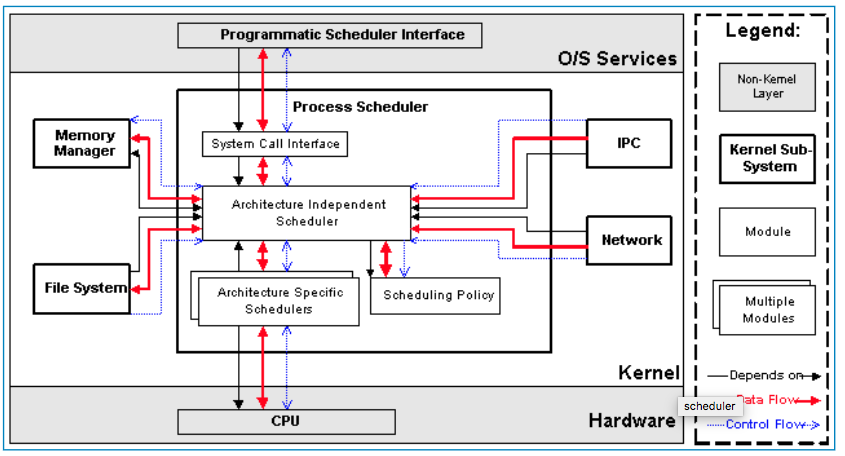
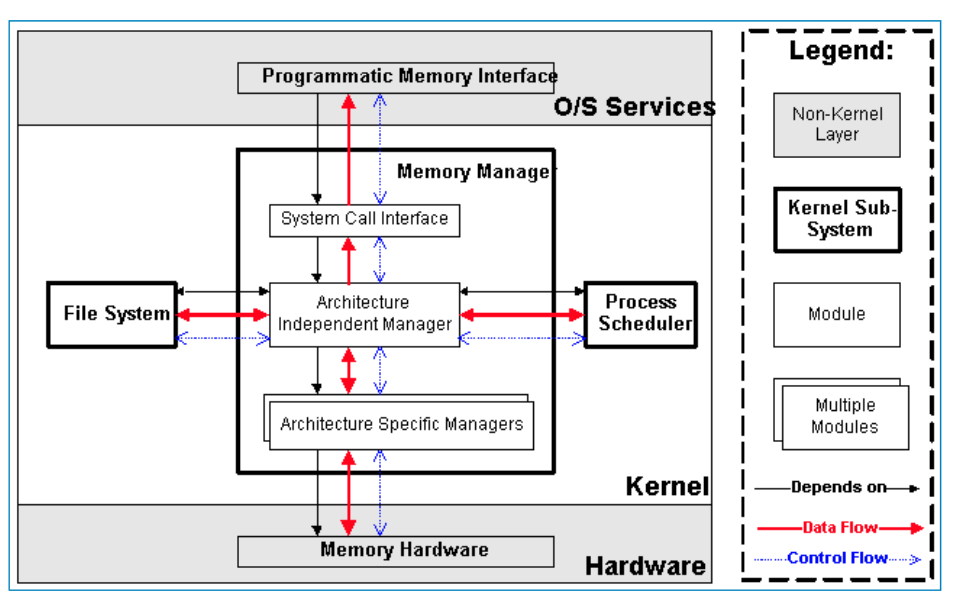
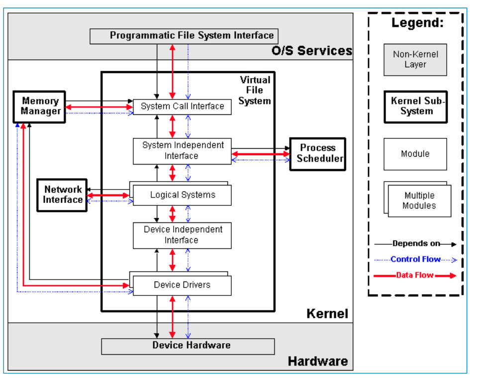
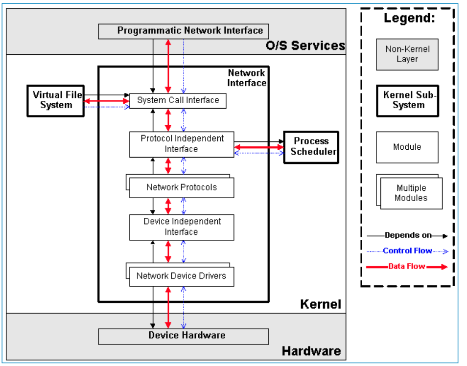

[toc]
linux kernel
Process Scheduler，也称作进程管理、进程调度。负责管理CPU资源，以便让各个进程可以以尽量公平的方式访问CPU。
Memory Manager，内存管理。负责管理Memory（内存）资源，以便让各个进程可以安全地共享机器的内存资源。另外，内存管理会提供虚拟内存的机制，该机制可以让进程使用多于系统可用Memory的内存，不用的内存会通过文件系统保存在外部非易失存储器中，需要使用的时候，再取回到内存中。
VFS（Virtual File System），虚拟文件系统。Linux内核将不同功能的外部设备，例如Disk设备（硬盘、磁盘、NAND Flash、Nor Flash等）、输入输出设备、显示设备等等，抽象为可以通过统一的文件操作接口（open、close、read、write等）来访问。这就是Linux系统“一切皆是文件”的体现（其实Linux做的并不彻底，因为CPU、内存、网络等还不是文件，如果真的需要一切皆是文件，还得看贝尔实验室正在开发的”Plan 9”的）。
Network，网络子系统。负责管理系统的网络设备，并实现多种多样的网络标准。
IPC（Inter-Process Communication），进程间通信。IPC不管理任何的硬件，它主要负责Linux系统中进程之间的通信。
Process Scheduler
进程调度是Linux内核中最重要的子系统，它主要提供对CPU的访问控制。因为在计算机中，CPU资源是有限的，而众多的应用程序都要使用CPU资源，所以需要“进程调度子系统”对CPU进行调度管理。

Scheduling Policy，实现进程调度的策略，它决定哪个（或哪几个）进程将拥有CPU。
Architecture-specific Schedulers，体系结构相关的部分，用于将对不同CPU的控制，抽象为统一的接口。这些控制主要在suspend和resume进程时使用，牵涉到CPU的寄存器访问、汇编指令操作等。
Architecture-independent Scheduler，体系结构无关的部分。它会和“Scheduling Policy模块”沟通，决定接下来要执行哪个进程，然后通过“Architecture-specific Schedulers模块”resume指定的进程。
System Call Interface，系统调用接口。进程调度子系统通过系统调用接口，将需要提供给用户空间的接口开放出去，同时屏蔽掉不需要用户空间程序关心的细节。
Memory Manager

Architecture Specific Managers，体系结构相关部分。提供用于访问硬件Memory的虚拟接口。
Architecture Independent Manager，体系结构无关部分。提供所有的内存管理机制，包括：以进程为单位的memory mapping；虚拟内存的Swapping。
System Call Interface，系统调用接口。通过该接口，向用户空间程序应用程序提供内存的分配、释放，文件的map等功能。
虚拟文件系统（Virtual Filesystem, VFS）

Device Drivers，设备驱动，用于控制所有的外部设备及控制器。由于存在大量不能相互兼容的硬件设备（特别是嵌入式产品），所以也有非常多的设备驱动。因此，Linux内核中将近一半的Source Code都是设备驱动，大多数的Linux底层工程师（特别是国内的企业）都是在编写或者维护设备驱动，而无暇估计其它内容（它们恰恰是Linux内核的精髓所在）。
Device Independent Interface， 该模块定义了描述硬件设备的统一方式（统一设备模型），所有的设备驱动都遵守这个定义，可以降低开发的难度。同时可以用一致的形势向上提供接口。
Logical Systems，每一种文件系统，都会对应一个Logical System（逻辑文件系统），它会实现具体的文件系统逻辑。
System Independent Interface，该模块负责以统一的接口（快设备和字符设备）表示硬件设备和逻辑文件系统，这样上层软件就不再关心具体的硬件形态了。
System Call Interface，系统调用接口，向用户空间提供访问文件系统和硬件设备的统一的接口。
网络子系统（Net）

Network Device Drivers，网络设备的驱动，和VFS子系统中的设备驱动是一样的。
Device Independent Interface，和VFS子系统中的是一样的。
Network Protocols，实现各种网络传输协议，例如IP, TCP, UDP等等。
Protocol Independent Interface，屏蔽不同的硬件设备和网络协议，以相同的格式提供接口（socket)。
System Call interface，系统调用接口，向用户空间提供访问网络设备的统一的接口。
Linux内核源代码的目录结构
内核核心代码，包括第3章所描述的各个子系统和子模块，以及其它的支撑子系统，例如电源管理、Linux初始化等
其它非核心代码，例如库文件（因为Linux内核是一个自包含的内核，即内核不依赖其它的任何软件，自己就可以编译通过）、固件集合、KVM（虚拟机技术）等
编译脚本、配置文件、帮助文档、版权说明等辅助性文件